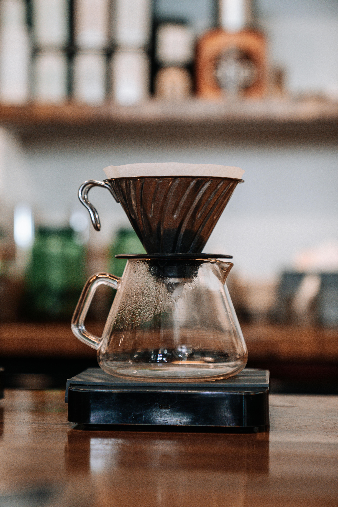
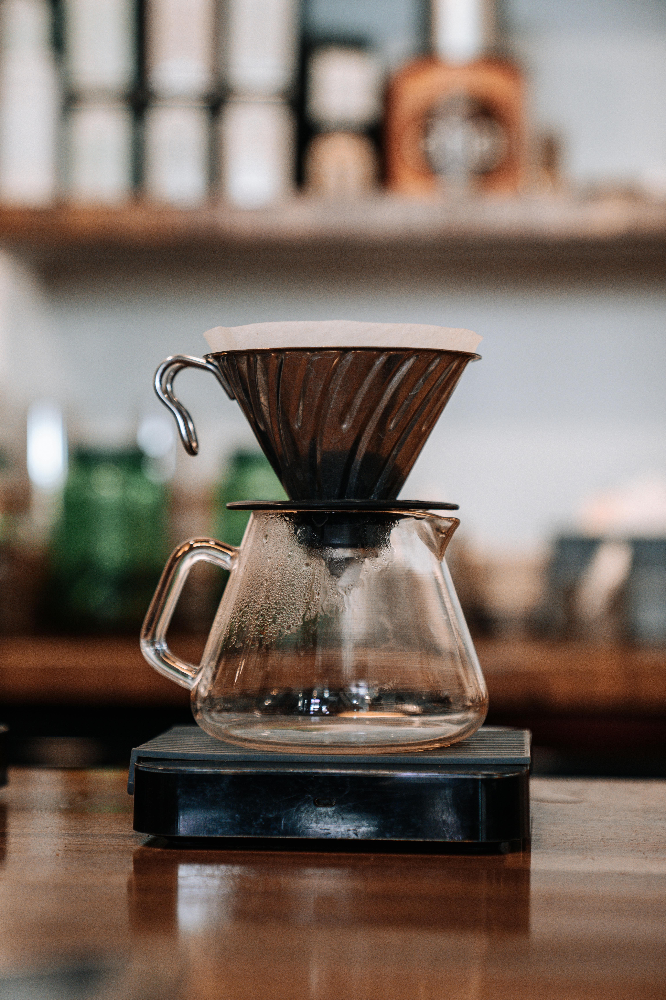

En la cafetera Chemex, la preparación del café es sencilla ya que se trata de una cafetera de goteo y además es un proceso 100% manual. El café que se obtiene es ligero y sin notas ácidas ni amargas. No en vano su inventor era químico y dominaba perfectamente la extracción de sabor y aroma de los granos de café. La cafetera Chemex se puede encontrar en varios tamaños: de 3, 6, 8 e incluso 10 tazas. Aunque está pensada y diseñada desde el inicio para extraer todos los sabores del café, también se puede usar con té. El tiempo de infusión del té es, en muchos casos, de entre 3 y 5 minutos, el mismo tiempo que se tarda en sacar un buen café con la Chemex. Aun cuando prima la comodidad de las cápsulas, algunos diseños como la Chemex resisten en el campo del café de especialidad o premium. Animaos a probar nuevos cafés y experimentad cómo un mismo grano de café puede dar como resultado infusiones tan diferentes según la cafetera que usemos.
El que probablemente ha sido el diseño más popular, fue patentado por el suizo Faliero Bondanini en 1958 el cual fue conocido en Francia en donde fue fabricado como 'Chambord'. La popularidad del Chambord en Francia fue lo que le dió a la cafetera, su identidad francesa. La prensa francesa tiene una forma exterior muy similar a la de un pistón o émbolo que se desliza sobre una superficie cilíndrica de vidrio o plástico, suele tener un asa para que pueda verterse el contenido de su interior a una taza cuando se considere listo. El émbolo tiene una especie de filtro de nailon, goma o aluminio capaz de dejar pasar sólo el agua y no los posos (o restos) de café.
El filtro de café se trata de un utensilio de cocina que tiene la función de filtrar el agua caliente de los granos molidos del café para la elaboración del café bebido. Este filtro se suele encontrar elaborado de papel, que son para ser usados generalmente una sola vez, pero existen versiones de acero inoxidable, como las que se emplean para elaborar el café en la India. El primer filtro de café fue inventado en 1908 por la empresaria Melitta Bentz en Dresde (Alemania). La intención de esta inventora era quitar el sabor amargo del café causado por el exceso de cocción cuando se hacía café. Hay varios tamaños y diseños parecidos; pero también existen los filtros que, como paquetito, envuelven a una porción de café ya predeterminada.